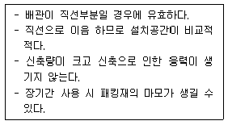
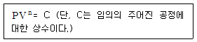
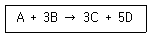
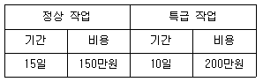

가스기능장 (2008-07-13 기출문제)
1과목: 임의 구분
1. 다음 가스 폭발에 대한 설명 중 틀린 것은?
- 압력과 폭발 범위는 서로 관계가 없다.
- 관 지름이 가늘수록 폭굉 유도거리는 짧아진다.
- 혼합가스의 폭발 범위는 르샤틀리에 법칙을 적용한다.
- 이황화탄소, 아세틸렌, 수소는 위험도가 커서 위험하다.
(정답률: 89%)

2. 배관용 합금 강관의 KS 규격 표시 기호는?
- SPA
- STPA
- SPP
- SPPS
(정답률: 75%)
3. 다음 고압밸브에 대한 설명으로 옳은 것은?
- 주로 주조품을 깎아서 만든다.
- 슬루스 밸브는 기밀도가 좋다.
- 글로브 밸브는 기밀도가 나쁘다.
- 콕(cock)은 통로의 개폐가 신속히 이루어진다.
(정답률: 58%)
4. 용접시 가접을 하는 이유로 가장 적당한 것은?
- 응력 집중을 크게 하기 위하여
- 용접부의 강도를 크게 하기 위하여
- 용접자세를 일정하게 하기 위하여
- 용접 중의 변형을 방지하기 위하여
(정답률: 93%)
5. 22 다음 [보기]의 특징을 가진 신축이음재의 종류는?

- 슬리브형
- 벨로스형
- 루프형
- 스위블형
(정답률: 86%)
6. 액화천연가스 180[ton]을 저장하는 저압 지하식 저장탱크는 그 외면으로부터 사업소 경계까지 몇 [m] 이상이 안전거리를 유지하여야 하는??
- 17
- 27
- 34
- 71
(정답률: 71%)
7. 공기액화분리장치에서 공기 중에 아세틸레가스가 혼합되면 안 되는 이유에 관하여 옳게 설명한 것은?
- 산소의 순도가 나빠지 기 때문에
- 질소와 산소의 분리가 방해되므로
- 배관 내에서 동결하여 관을 막을 수 있으므로
- 분리기 내의 액체산소 탱크 내에 들어가 폭발하기 때문에
(정답률: 94%)
8. 산소의 공업적 제조법에 해당하는 것은?
- 공기를 액화 분리하여 얻는다
- 석유의 부분 산화법으로 얻는다
- 과산화수소와 이산화망간을 반응시켜 얻는다
- 염소산칼륨과 이산화망간을 혼합하여 열분해 시켜 얻는다.
(정답률: 81%)
9. 다음 중 아세틸렌과 접촉 반응하여 폭발성 물질을 생성하지 않는 금속은?
- 금
- 은
- 구리
- 수은
(정답률: 78%)
10. 다음 중 가연성이면서 독성가스로 분류되는 것은?
- 산화에틸렌
- 아세틸렌
- 부타디엔
- 프로판
(정답률: 87%)
11. 공기 중에 누출되었을 때 낮은 곳에 체류하는 가스로만 짝지어진 것은?
- 프로판, 염소, 포스겐
- 프로판, 수소, 아세틸렌
- 아세틸렌, 염소, 암모니아
- 아세틸렌, 포스겐, 암모니아
(정답률: 86%)
12. 음 중 차량에 고정된 용기의 운반기준에 있어 고압가스 운반 시 운반책임자를 반드시 동승시켜야 하는 경우는?
- 압축가스 중 용적이 400[m3]인 산소
- 압축가스 중 용적이 50[m3] 인 독성 가스
- 액화가스 중 질량이 2000[kg]인 프로판 가스
- 액화가스 중 질량이 2000[kg]인 독성가스
(정답률: 83%)
13. 일산화탄소와 공기의 혼합가스는 압력이 높아지면 폭발 범위는 어떻게 되는??
- 넓어진다.
- 좁아진다.
- 변화 없다.
- 0.5[MPal까지는 좁아지다가,0,5[MPa] 이상에서는 넓어진다.
(정답률: 65%)
14. 다음 중 가스분석 시 이산화탄소(CO2)의 흡수제로 사용되는 것은?
- 수산화칼륨 수용액
- 요오드화수은 칼륨 용액
- 알칼리성 피로갈롤 용액
- 암모니아성 염화 제1구리 용액
(정답률: 78%)
15. 폴리트로픽 공정은 다음 [식]과 같이 표현된다. 이때 n 이 0인 경우 다음 중 어느 변화에 해당하는가?

- 등압 변화
- 등적 변화
- 등온 변화
- 단열 변화
(정답률: 55%)
16. 가스 배관 장치에서 주로 사용되고 있는 부르동관 압력계 사용 시의 주의사항에 대한 설명 중 틀린 것은?
- 안전장치가 되어 있는 것을 사용할 것
- 압력계의 가스 유입이나 폐지 시에는 조용히 조작할 것
- 정기적으로 검사를 하여 지시의 정확성을 미리 확인하여 둘 것
- 압력계는 온도나 진동, 충격 등의 변화에 관계없이 선택할 것
(정답률: 90%)
17. 배관의 이음방법 중 플랜지를 접합하는 방법이 아닌 것은?
- 나사식
- 노허브식
- 블라인드식
- 소켓 용접식
(정답률: 78%)
18. 다음 중 고압가스 특정제조의 허가대상시설에 해당하지 않는 것은?
- 철강공업자의 철강공업시설 또는 그 부대 시설에서 고압가스를 제조하는 것으로 그 처리능력이 10만[m3] 이상인 것
- 석유화학공업자 또는 지원 사업을 하는 자의 시설에서 고압가스 처리능력이 1000[m3] 이상 또는 그 저장능력이 50[ton] 이상인 것
- 석유정제업자의 석유정제시설 또는 그 부대시설에서 고압가스를 제조하는 것으로 서 그 저장능력이 100[ton] 이상인 것
- 비료생산업자의 비료제조시설 또는 그 부대시설에서 고압가스를 제조하는 것으로 서 그 처리능력이 10만[m3] 이상이거나 저장능력이 100[ton] 이상인 것
(정답률: 67%)
19. 암모니아용 냉동기에서 팽창밸브 직전 액냉매의 엔탈피가 110[kcal/kg], 흡입증기 냉매의 엔탈피가 360[kcal/kg]일 때 10[RT]의 냉동능력을 얻기 위한 냉매 순환량은 약 몇 [kg/h]인가? (단, 1[RT는 3320 [kcal/h]이다.)
- 132.8
- 218.3
- 263.6
- 312.8
(정답률: 51%)
20. 고압가스 제조자는 용기에 가스를 충전하기 전에 용기에 대한 안전점검을 실시하여야 하는데 다음 중 점검기준이 아닌 것은?
- 용기는 도색이 되어 있는지 확인
- 재검사 기간의 도래 여부 확인
- 용기 밸브로부터의 누출 여부 확인
- 밸브의 그랜드너트는 고정핀 등으로 이탈방지 조치되어 있는지 확인
(정답률: 67%)
2과목: 임의 구분
21. 용기에는 폭발사고와 파열사고가 있을 수 있다. 다음 중 파열사고의 원인이 아닌 것은?
- 재료의 불량이나 부식이 되었을 때
- 용기가 외부로부터 과열(過熱) 될 때
- 액화가스가 과충전(過充塡) 되었을 때
- 수소용기 내에 5[%] 이상의 산소가 존재할 때
(정답률: 76%)
22. 차량에 고정된 탱크로 고압가스를 운반할때 가스를 송출 또는 이입하는데 사용되는 밸브를 후면에 설치한 탱크에서 탱크 주 밸브와 차량의 뒷범퍼와의 수평거리는 몇 [cm] 이상 떨어져 있어야 하는가?
- 20
- 30
- 40
- 50
(정답률: 87%)
23. 다음 터보형 압축기의 특징에 대한 설명 중 틀린 것은?
- 압축비가 크고, 용량조정 범위가 넓다.
- 비교적 소형이며, 대용량에 적합하다.
- 연속토출이 되므로 맥동현상이 적다.
- 전동기의 회전축에 직결하여 구동할 수 있다.
(정답률: 79%)
24. 다음 압력계 중 탄성식 압력계에 해당되지 않는 것은?
- 부르동관 압력계
- 벨로스 압력계
- 피에조 압력계
- 다이어프램 압력계
(정답률: 81%)
25. 다음 중 액화석유가스 충전, 판매사업소의 변경허가를 받지 않아도 되는 경우는? (단, 판매시설과 영업소의 저장설비는 제외한다.)
- 사업소의 이전
- 사업소 대표자의 주소 변경
- 저장설비의 교체 설치
- 저장설비의 용량 증가
(정답률: 84%)
26. 질화표면 경화법은 강에 대하여 내마모성, 열적 안정성 등을 주기 위한 방법이다. 이 때 사용되는 질화제는?
- 산소
- 수소
- 아세틸렌
- 암모니아
(정답률: 81%)
27. 특정고압가스 사용시설에서 독성가스의 감압설비와 그 가스의 반응설비간의 배관에 반드시 설치하여야 하는 장치는?
- 역류방지장치
- 화염방지장치
- 독성가스 흡수장치
- 안전밸브
(정답률: 84%)
28. 대기압(0[C], 101.3[kPa])에서 비점(끓는점)이 높은 것에서 낮은 순으로 옳게 나열된 것은?
- CH4, C3H8, C4H10, Cl2
- C4H10, Cl2, C3H8, CH4
- Cl2, C4H10, C3H8, CH4
- C3H8, Cl2, CH4, C4H10
(정답률: 76%)
29. 액화석유가스의 안전관리 및 사업법에서 정의하는 용어에 대한 설명으로 옳은 것은?
- 액화석유가스란 에탄, 프로판을 주성분으로 한 가스를 기화한 것을 말한다.
- ) 액화석유가스 충전사업이란 저장시설에 저장된 액화석유가스를 용기에 충전하거나 자동차에 고정된 탱크에 충전하여 공급하는 사업을 말한다.
- 액화석유가스 집단공급 사업이란 용기에 충전된 액화석유가스를 공급하는 것을 말한다.
- 액화석유가스 저장소란 산업통상자원부령이 정하는 1000[L] 이상의 연료용 가스를 용기 또는 저장탱크에 의하여 저장하는 시설을 말한다.
(정답률: 79%)
30. 고압가스 일반제조의 기술기준에 대한 내용 중 틀린 것은?
- 석유류, 유지류 또는 글리세린은 산소압축기의 내부 윤활제로 사용하지 아니할 것
- 산화에틸렌의 저장탱크는 그 내부의 질소가스, 탄산가스 및 산화에틸렌가스의 분위기 가스를 질소가스 또는 탄산가스로 치환하고 5[℃] 이하로 유지할 것
- 충전용 주관의 압력계는 매월 1회 이상, 그 밖의 압력계는 3월에 1회 이상 표준이 되는 압력계로 그 기능을 검사할 것
- 산소 중의 가연성가스(아세틸렌, 에틸렌및 수소를 제외한다.)의 용량이 전용량의 2[%] 이상의 것은 압축을 금지할 것
(정답률: 70%)
31. 3[kg]의 산소가 일정 압력하에서 체적이 0.5[m3]에서 20[m3]으로 변하였을 때 엔트로피의 증가는 약 몇 [kcal/K]인가? (단, 산소의 정압비열 Cp는 0.22[kcal/kg∙K]이고, 이상기체로 가정한다.)
- 0.31
- 0.55
- 0.70
- 0,91
(정답률: 29%)
32. 저온장치에 사용되는 냉매의 구비조건으로 틀린 것은?
- 증발잠열이 클 것
- 임계온도가 낮을 것
- 액체의 비열이 작을 것
- 가스의 비체적이 작을 것
(정답률: 47%)
33. 고압가스 운반 시 가스누출사고가 발생되었다. 이 부분의 수리가 불가능한 경우, 재해발생 또는 확대를 방지하기 위한 조치사항으로 볼 수 없는 것은?
- 상황에 따라 안전한 장소로 운반한다.
- 상황에 따라 안전한 장소로 대피한다.
- 비상 연락망에 따라 관계 업소에 원조를 의뢰한다
- 펜스를 설치하고 다른 운반차량에 가스를 옮긴다.
(정답률: 86%)
34. 고압가스 안전관리법에서 규정한 공급자의 의무사항에 대한 설명으로 옳은 것은?
- 안전점검을 실시한 결과 수요자의 시설 중 개선할 사항이 있을 경우 그 수요자로 하여금 당해 시설을 개선하도록 한다.
- 고압가스 수요자의 사용시설 중 개선명령을 할수있는 자는 시·도지사이다.
- 고압가스를 수요자에게 공급할 때는 수요자에게 그 사용시설을 안전점검 하도록 한다.
- 고압가스 판매자는 고압가스의 수요자가 그 시설을 개선하지 아니할 때는 고압가스의 공급을 중단하고, 그 사실을 시·도지사에게 신고한다.
(정답률: 78%)
35. SI 단위에서 압력의 단위는 Pa(pascal)을 사용한다. 공학단위 1[(kgf/cm2]은 약 몇 [MPa]인가?
- 0.01013
- 0.01033
- 0.07601
- 0.09806
(정답률: 56%)
36. 다음 중 역화방지장치 내부의 재료로 사용되는 소염소자가 아닌 것은?
- 물
- 금망
- 소결 금속
- 탄화칼슘
(정답률: 63%)
37. 프로판가스 10[kg]을 완전 연소시키는데 필요한 공기량은 약 몇 [Nm3]인가? (단, 공기 중 산소와 질소의 체적비는 21:79 이다.)
- 76
- 95
- 110
- 122
(정답률: 59%)
38. 지름 30[mm]의 강 봉에 40[kN]의 하중이 안전하게 작용하고 있을 때 이 강봉의 인장강도가 350[MPa]이면 안전율은 약 얼마인가?
- 2.7
- 4,2
- 6,2
- 8.1
(정답률: 43%)
39. 표준상태(0[C], 101,325[kPa])에서 기체상수 R을 옳게 나타낸 것은?
- 0.082[erg/mol·K]
- 1.987[J/mol·K]
- 8.314×109^7[cal/mol∙K]
- 8.314 [J/mol·K]
(정답률: 82%)
40. 압축기에 사용하는 윤활유의 구비조건으로 틀린 것은?
- 인화점이 낮고, 분해되지 않을 것
- 점도가 적당하고, 항유화성이 클 것
- 수분 및 산류 등의 불순물이 적을 것
- 화학적으로 안정하여 사용가스와 반응을 일으키지 않을 것
(정답률: 84%)
3과목: 임의 구분
41. 다음 중 고압가스 관련설비에 해당하지 않는 것은?
- 냉각살수설비
- 기화장치
- 긴급차단장치
- 독성가스 배관용 밸브
(정답률: 78%)
42. 지식경제부장관은 가스의 수급상 필요하다고 인정되면 도시가스 사업자에게 조정을 명령할 수 있다. "조정 명령' 사항이 아닌 것은?
- 가스공급 계획의 조정
- 가스요금 등 공급조건의 조정
- 가스공급시설 공사계획의 조정
- 가스사업의 휴지, 폐지, 허가에 대한 조정
(정답률: 89%)
43. LPG 1[L]는 기체상태로 변하면 250[L]가 된다. 20[kg]의 LPG가 기체 상태로 변하면 약 몇 [m3]이 되는가? (단, 표준상태이며, 액체의 비중은 0.5이다.)
- 1
- 5
- 7,5
- 10
(정답률: 59%)
44. 다음의 반응에서 A와 B의 농도를 모두 2배로 해주면 반응속도는 이론적으로 몇 배나 되겠는가?

- 2
- 4
- 8
- 16
(정답률: 77%)
45. 다음 이상기체에 대한 설명 중 틀린 것은?
- 완전탄성체로 간주한다.
- 반데르발스 힘에 의하여 분자가 운동한다.
- 분자 사이에는 아무런 인력도, 반발력도 작용하지 않는다.
- 분자 자체가 차지하는 부피는 전체 계에 대하여 무시한다.
(정답률: 66%)
46. 액화산소 저장탱크 방류 둑의 용량은 저장능력 상당용적의 얼마 이상으로 하여야 하는가?
- 30 [%]
- 40 [%]
- 50 [%]
- 60 [%]
(정답률: 74%)
47. 액화석유가스의 안전관리 및 사업법에서 규정하고 있는 안전관리자의 직무범위가 아닌 것은?
- 회사의 가스영업 활동
- 가스용품의 제조공정 관리
- 사업소의 종업원에 대하여 안전관리를 위한 필요사항의 지휘∙감독
- 정기검사 또는 수시검사 결과 부적합 판정을 받은 시설의 개선
(정답률: 92%)
48. 흡수식 냉동기에서 암모니아 냉매의 흡수제는 무엇인가?
- 파라핀유
- 물
- 취화리듐
- 사염화에탄
(정답률: 82%)
49. 다음 중 품질 코스트(cost)의 구성이 아닌 것은?
- 예방 코스트
- 평가 코스트
- 실패 코스트
- 판매 코스트
(정답률: 75%)
50. 산소 1.5[mol], 질소 2[mol], 수소 1[mol], 일산화탄소 0.5[mol]을 섞은 혼합기체의 전압이 4기압일 때, 분압이 0.4기압이 되는 기체는 어느 것인가?
- 산소
- 질소
- 수소
- 일산화탄소
(정답률: 77%)
51. 가스 사용시설(연소기는 제외)의 기술기준에서 기밀시험의압력 기준으로 옳은 것은?
- 상용압력의 1.1배 또는 1kPa 중 높은 압력 이상
- 상용압력의 1.0배 또는 8.4kPa 중 높은 압력 이상
- 최고사용압력의 1.1배 또는 8.4kPa 중 높은 압력 이상
- 최고사용압력의 1.5배 또는 10kPa 중 높은 압력 이상
(정답률: 85%)
52. 다음 중 염소의 용도에 해당하지 않는 것은?
- 수돗물의 살균
- 염화비닐의 원료
- 섬유의 표백
- 수소의 제조원료
(정답률: 84%)
53. 가스용품을 수입하고자 하는 자는 시∙도지사의 검사를 받아야 하는데 검사의 전부를 생략할 수 없는 경우는?
- 수출을 목적으로 수입하는 것
- 시험연구 개발용으로 수입하는 것
- 산업기계설비 등에 부착되어 수입하는 것
- 주한 외국기관에서 사용하기 위하여 수입하는 것으로 외국의 검사를 받지 아니한 것
(정답률: 91%)
54. 다음 중 수소가스가 발생되기 가장 어려운 경우에 해당되는 반응은?
- 알루미늄과 염산의 반응
- 아연과 수산화나트륨의 반응
- 구리와 황산의 반응
- 알루미늄과 수산화나트륨과 물의 반응
(정답률: 79%)
55. 어떤 공장에서 작업을 하는데 있어서 소요되는 기간과 비용이 다음 [표]와 같을 때 비용구배는 얼마인가? (단, 활동시간의 단위는 일(日)로 계산한다.)

- 50,000원
- 100,000원
- 200,000원
- 300,000원
(정답률: 84%)
56. 공정에서 만성적으로 존재하는 것은 아니고 산발적으로 발생하며 품질의 변동에 크게 영향을 끼치는 요주의 원인으로 우발적 원인인 것을 무엇이라 하는??
- 우연 원인
- 이상원인
- 불가피 원인
- 억제할 수 없는 원인
(정답률: 67%)
57. 방법시간측정법(MTM: Method Time Measure-ment)에서 사용되는 1 TMU(Time Measure-ment Unit)는 몇 시간인가?
- 1/100000 시간
- 1/10000 시간
- 6/10000 시간
- 36/1000 시간
(정답률: 76%)
58. 다음 중 품질관리시스템에 있어서 4M에 해당하지 않는 것은?
- Man
- Machine
- Material
- Money
(정답률: 91%)
59. 계수 규준형 1회 샘플링 검사(KS A 3102)에관한 설명 중 가장 거리가 먼 내용은?
- 검사에 제출된 로트의 제조공정에 관한 사전정보가 없어도 샘플링 검사를 적용 할수있다.
- 생산자 측과 구매자 측이 요구하는 품질 보호를 동시에 만족시키도록 샘플링 검사방식을 선정한다.
- 파괴검사의 경우와 같이 전수검사가 불가능한 때에는 사용할 수 없다.
- 1회 만의 거래 시에도 사용할 수 있다.
(정답률: 73%)
60. 품질특성을 나타내는 데이터 중 계수치 데이터에 속하는 것은?
- 무게
- 길이
- 인장강도
- 부적합품의 수
(정답률: 81%)